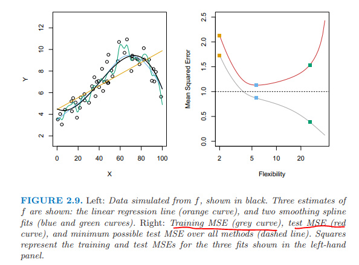
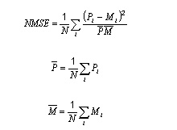
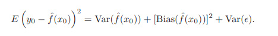
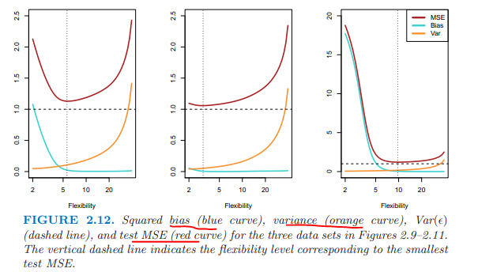

這本書是神作《the elements of statistical learning》的簡易版，而且添加了用R實施算法的部份。
chapter 1 Introduction
有監督的（對連續變量進行回歸分析、對離散變量進行分類分析）、
無監督的（沒有結果可供參考，如聚類分析）。
19世紀初：針對連續變量的線性回歸。
1936年：fisher針對離散變量的linear discriminant analysis。
1940年：出現了邏輯回歸。
1970年：合併以上模型，出現廣義線性回歸，簡稱glm。
1980年：出現了非線性模型，如分類回歸樹，交叉驗證等。
1986年：廣義線性回歸 + 非線性 = 廣義加法模型gam。
chapter 2 statistical learning
推斷（使用簡單的、可解釋的模型）
預測（誤差有兩種：一個是模型本身的誤差，可以通過
增加模型的複雜度減小誤差，另外一種是隨機誤差，無法縮減的，未知的變動，也可能包含了其他有用的解釋變量）
參數模型：假定函數形式；求參數、擬合模型；如線性模型。
非參模型：不假定函數形式；需要大量數據去估計模型，如樣條模型spline。
魚與熊掌不可兼得。 預測精度 與 模型解釋度 之間需要抉擇。
評估模型的準確性或者擬合質量：
均方誤越小，估計值越接近真值。 
訓練集的均方誤隨模型的複雜度加大而降低； 測試集的均方誤隨模型複雜度的加大先下降后上升，呈U形。
標準化的均方誤nmse （normalized mean squared error） 變量正態化后在區間0到1之間，然後計算均方誤。

expected test MSE = 
第三項是不可控制的，只能希望low variance and low bias，才能均方誤最小。 當訓練集變動時，複雜度高的模型，方差大、波動大，但是偏差小。

本章重點：均方誤MSE、NMSE。
备注：转移自新浪博客，截至2021年11月，原阅读数242，评论1个。